Every unit in Kancil now opens with a short story and ends with a Sungai Buaya boss. These are the new Malay lines kids will read. Could you check each one?
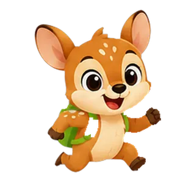
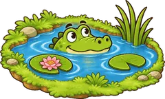
Untuk setiap ayat, tekan Betul atau Perlu ubah. Jika perlu ubah, tulis cadangan dalam kotak. Semakan anda disimpan dalam pelayar ini, jadi anda boleh berhenti dan sambung kemudian. Apabila selesai, tekan Salin maklum balas dan tampal dalam WhatsApp atau e-mel.
Pembaca: murid sekolah rendah (9–12 tahun). Grammar and spelling, penjodoh bilangan, imbuhan, natural register for kids, and lines of 12 words or fewer. The words in the dashed boxes are lesson words that have already been checked; only the numbered lines need review. The English under each line is just a guide.
L001KANCILCari tiga perkataan ini dalam pelajaran nanti!Find these three words in the lessons!
Kosa kata asas, ayat mudah, imbuhan awal, peribahasa pertama
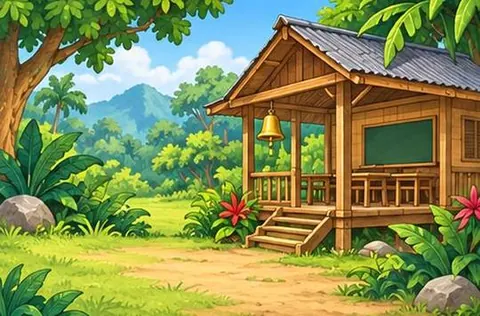
L002KANCILLoceng sudah berbunyi! Hari ini kita ke sekolah.The bell has rung! Today we go to school.
L003KETUASekolah? Buaya tak perlu sekolah… kami tunggu di sungai!School? Crocs don't need school… we'll wait at the river!
L004KANCILAlamak! Sekolah di seberang sungai!Boss opener line
L005KANCILCikgu saya kata buaya tak pandai mengira. Betul ke?Boss taunt line
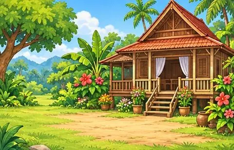
L006KANCILJom melawat rumah nenek! Semua keluarga ada di sini.Let's visit Grandma! The whole family is here.
L007KANCILTapi rumah nenek di seberang sungai… ada buaya!But Grandma's house is across the river… with crocs!
L008KANCILRumah nenek di seberang sana… tapi sungai ini penuh buaya!Boss opener line
L009KANCILNenek saya pandai mengira. Buaya pula… entahlah!Boss taunt line
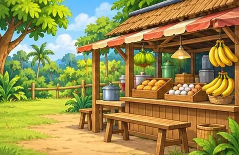
L010KANCILPerut saya berbunyi! Jom ke kedai makan.My tummy is rumbling! Let's go to the food stall.
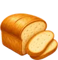
roti
telurpisangL011KETUAHeh! Kami pun lapar… kami tunggu kau di sungai!Heh! We're hungry too… we'll wait for you at the river!
L012KANCILRoti sudah habis. Siapa pula yang lapar di sungai ini?Boss opener line
L013KANCILBuaya makan banyak, tapi tak pandai mengira!Boss taunt line
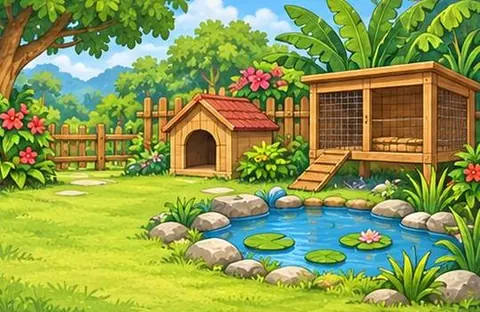
L014KANCILWah, banyaknya haiwan comel di taman ini!Wow, so many cute animals in this garden!
L015KETUAComel? Buaya pun haiwan juga, tahu!Cute? Crocs are animals too, you know!
L016KANCILKucing dan arnab sudah pulang. Tinggal buaya di sungai…Boss opener line
L017KANCILKamu haiwan paling besar, tapi pandai mengira ke?Boss taunt line
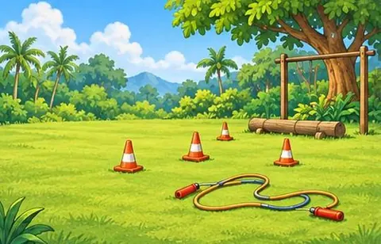
L018KANCILJom bersenam! Gerakkan tangan dan kaki.Let's exercise! Move your hands and feet.
L019KANCILKaki saya kuat… cukup kuat untuk melompati sungai!My legs are strong… strong enough to hop a river!
L020KANCILKaki sudah panas. Tiba masanya untuk melompat!Boss opener line
L021KANCILGigi kamu banyak. Boleh kira gigi sendiri tak?Boss taunt line
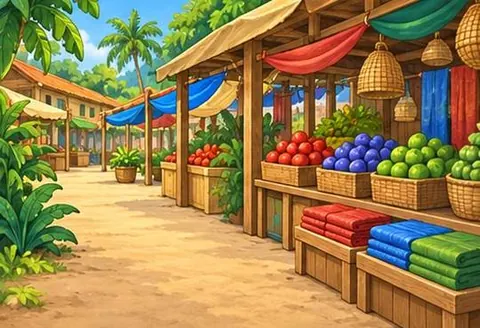
L022KANCILMerah, kuning, hijau… cantiknya warna di pasar ini!Red, yellow, green… what pretty colours in this market!
L023KETUANombor? Heh… buaya paling pandai mengira!Numbers? Heh… crocs are the best at counting!
L024KANCILSatu, dua, tiga… hari ini saya kira buaya pula!Boss opener line
L025KANCILKamu kata pandai mengira. Buktikan!Boss taunt line
L026KANCILDari bukit ini, kita boleh melihat langit!From this hill, we can see the sky!
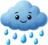
hujanL027KETUAHujan turun, sungai naik… kami suka!Rain falls, the river rises… we love it!
L028KANCILHujan sudah reda. Sungai pula penuh buaya!Boss opener line
L029KANCILAwan pun saya boleh kira. Buaya pula?Boss taunt line
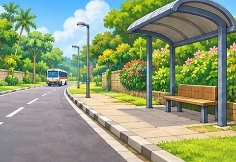
L030KANCILBas sudah sampai! Kita naik apa hari ini?The bus is here! What shall we ride today?
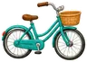
basikalL031KANCILTapi… tiada bas yang boleh menyeberangi sungai itu.But… no bus can cross that river.
L032KANCILTiada jambatan, tiada bot… nampaknya saya kena melompat!Boss opener line
L033KANCILBuaya boleh jadi bas saya. Tapi pandai mengira ke?Boss taunt line
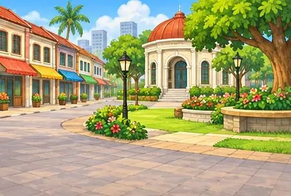
L034KANCILSelamat datang ke pekan! Banyak tempat menarik di sini.Welcome to town! There are lots of fun places here.
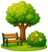
tamanperpustakaanL035KETUAPekan ini cantik… tapi jalan keluarnya melalui sungai kami!Nice town… but the way out goes through our river!
L036KANCILPekan sudah jauh di belakang. Sungai di depan!Boss opener line
L037KANCILKamu tahu jalan ke pekan? Mengira pun tak pandai!Boss taunt line
Imbuhan apitan, kata hubung, kata ganda, peribahasa
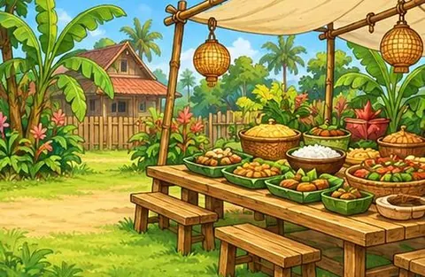
L038KANCILKenduri besar hari ini! Seluruh keluarga berkumpul.A big feast today! The whole family has gathered.
L039KANCILSelepas kenduri, kita pulang… melalui sungai buaya!After the feast, we head home… past the croc river!
L040KANCILWah… banyaknya buaya di sungai ini!Boss opener line
L041KANCILSatu keluarga buaya… tapi seekor pun tak pandai mengira!Boss taunt line
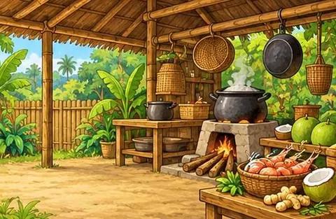
L042KANCILWah, baunya sedap! Hentian kita hari ini: dapur kampung.Wow, it smells good! Today's stop: the village kitchen.
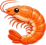
udangkelapahaliaL043KETUASedapnya bau… Kancil, kami pun lapar!Smells delicious… Kancil, we're hungry too!
L044KANCILDapur kampung di belakang. Buaya lapar di depan!Boss opener line
L045KANCILKamu lapar? Kira dulu berapa ekor kawan kamu!Boss taunt line
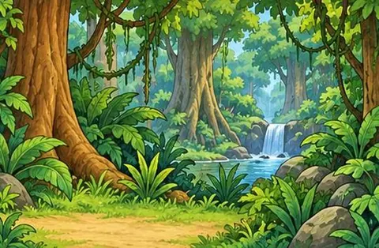
L046KANCILSyhh… hutan ini penuh dengan haiwan liar.Shh… this forest is full of wild animals.
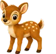
rusahelangburung hantuL047KETUAHaiwan paling hebat di hutan? Tentulah buaya!The greatest animal in the forest? Crocs, of course!
L048KANCILGelapnya malam ini… mana semua buaya?Boss opener line
L049KANCILSembunyi pun tak guna — saya boleh kira buih!Boss taunt line
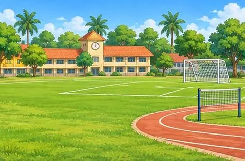
L050KANCILSedia, mula! Hari ini hari sukan!Ready, go! Today is sports day!
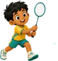
badmintonL051KETUARenang? Buaya juara renang, tahu!Swimming? Crocs are swimming champions, you know!
L052KANCILPerlumbaan terakhir: menyeberangi sungai!Boss opener line
L053KANCILJuara renang, tapi kalah mengira!Boss taunt line
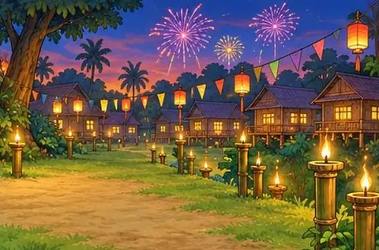
L054KANCILAda pelita, tanglung dan bunga api! Pesta apa ini?Oil lamps, lanterns and fireworks! What festival is this?
L055KETUAPesta? Buaya tak dijemput… jadi kami tunggu di sungai!A festival? Crocs weren't invited… so we'll wait at the river!
L056KANCILBunga api di langit… dan mata buaya di sungai!Boss opener line
L057KANCILSemua orang datang ke pesta. Kira tetamu pun kamu tak boleh!Boss taunt line
Ayat pasif, penanda wacana, kata terbitan, peribahasa PSLE
L058KANCILDengar ombak itu! Alam ini sangat indah.Listen to the waves! Nature is so beautiful.
L059KETUAIndah? Sungai kami pun indah… datanglah!Beautiful? Our river is beautiful too… come on over!
L060KANCILRibut datang… sungai pun marah malam ini.Boss opener line
L061KANCILPetir saya tak takut. Buaya yang tak pandai mengira — itu baru lawak!Boss taunt line
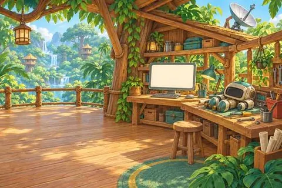
L062KANCILBip bip! Ada robot, komputer dan satelit di sini!Beep beep! There are robots, computers and satellites here!
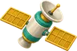
satelitL063KETUAKomputer boleh mengira… buaya pun boleh!Computers can count… so can crocs!
L064KANCILKomputer boleh mengira. Buaya pula… kita tengok!Boss opener line
L065KANCILKamu perlu kalkulator untuk mengira ekor sendiri!Boss taunt line
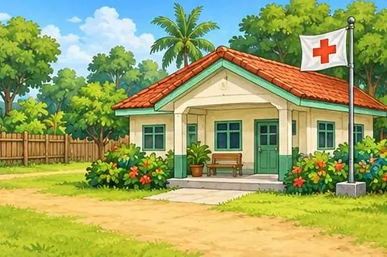
L066KANCILDoktor kata: makan makanan berkhasiat dan tidur cukup!The doctor says: eat healthy food and get enough sleep!
L067KETUASihat? Buaya paling sihat… gigi kami tajam!Healthy? Crocs are the healthiest… our teeth are sharp!
L068KANCILBadan sihat, kaki kuat. Sedia melompat!Boss opener line
L069KANCILGigi kamu tajam. Otak kamu pula… tak pandai mengira!Boss taunt line
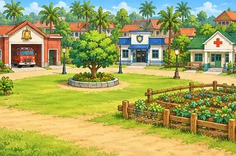
L070KANCILBila besar nanti, kamu mahu jadi apa?When you grow up, what do you want to be?
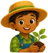
petaniL071KETUACita-cita kami? Jadi juara menangkap kancil!Our dream job? Champion mousedeer-catchers!
L072KANCILKerja hari ini: menyeberangi sungai dengan selamat!Boss opener line
L073KANCILBuaya boleh jadi apa? Bukan cikgu matematik, pasti!Boss taunt line
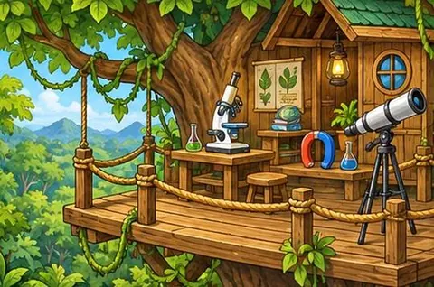
L074KANCILSelamat datang ke makmal! Jom buat eksperimen.Welcome to the lab! Let's do an experiment.
L075KETUAEksperimen? Cuba kira berapa ekor buaya di sungai kami!An experiment? Try counting the crocs in our river!
L076KANCILEksperimen terakhir: bolehkah buaya mengira?Boss opener line
L077KANCILHipotesis saya: buaya tak pandai mengira!Boss taunt line